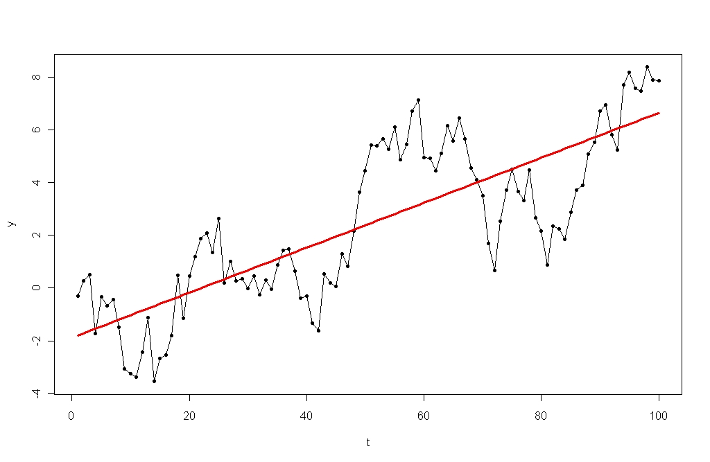

Random Walk & Strong Form Efficiency

GOOG or weighted coin toss?
If you take any finance class anywhere in the world, you are bound to come across the random walk (with drift) hypothesis and the efficient markets hypothesis.
The random walk with drift hypothesis posits that the stock market moves in a stochastic (random) fashion in the short run, but that it “drifts” upwards in the long run. This means that it’s impossible to predict future values based on historical data, and that spending time and energy actively picking stocks will not earn you a return higher than the return on passive, steadily-appreciating market portfolio.
The random walk theory is a somewhat generalized version of the efficient markets hypothesis, which states that in a strong form efficient market, it is impossible to beat the market because every single piece of information relevant to the value of every single stock has already been priced in. Thus, every stock is worth exactly what it should be at all times, and an investor can never be “ahead” of the market.
The stock markets are most definitely not strong form efficient, as investors are not purely rational beings that trade on perfect information. But the markets are notoriously hard to beat for an extended period of time (see semi-strong form efficiency). And, theoretically, the difficulty of beating the market should only be increasing as the flow of information becomes quicker and broader, the volume of trades (especially algorithmic, machine-executed trades) increases, and an ever-increasing number of investors enter the market.
The only way to reconcile these hypotheses with the continued, and in recent months, increasingly feverish hunt for hedge fund alpha (a fancy finance term for above-market profit) is through differences in information – what many would consider “insider trading”. In an efficient market, funds that consistently outperform the market are either 1 in a million lucky (how do you choose this firm as an investor? you can’t), or they trade on information that others do not have access to.